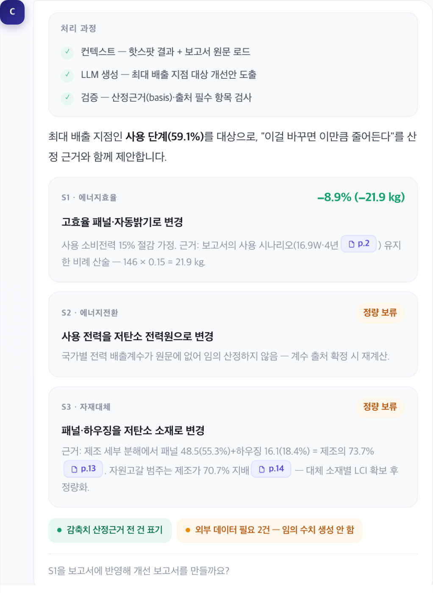
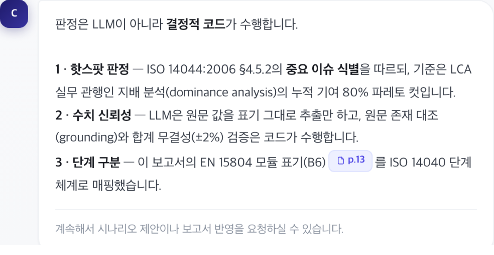
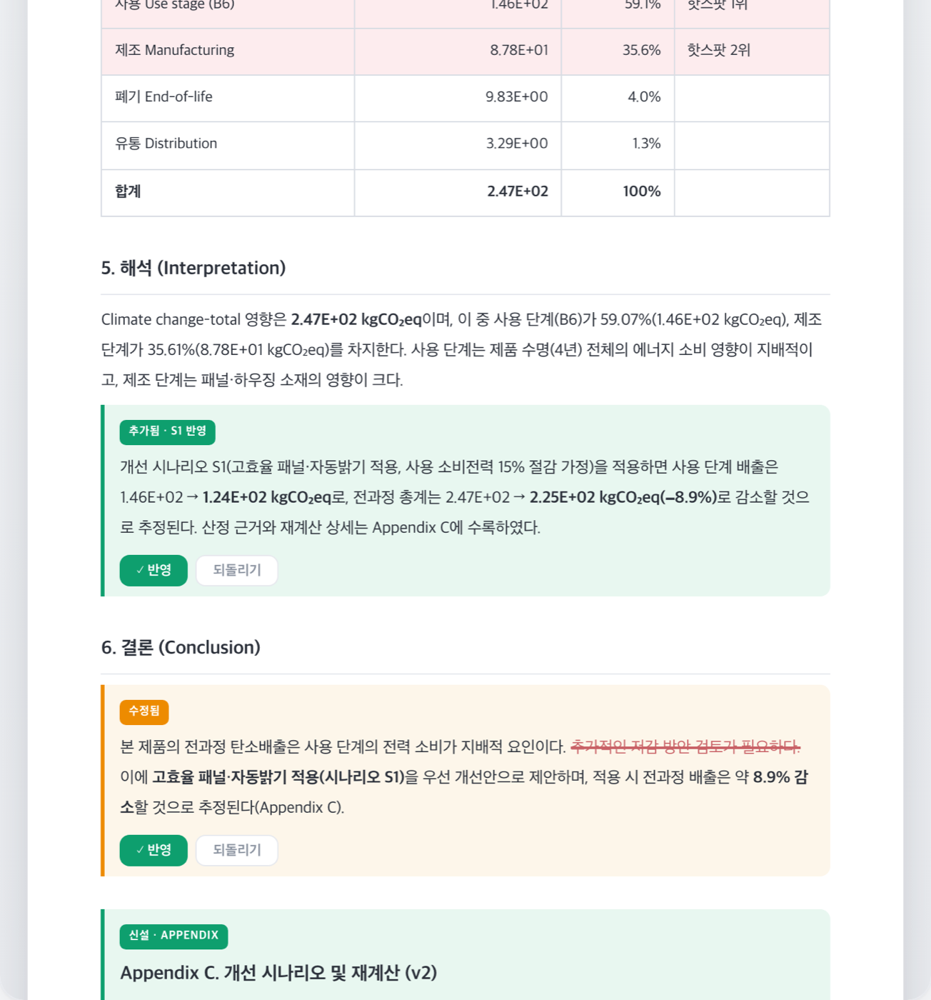
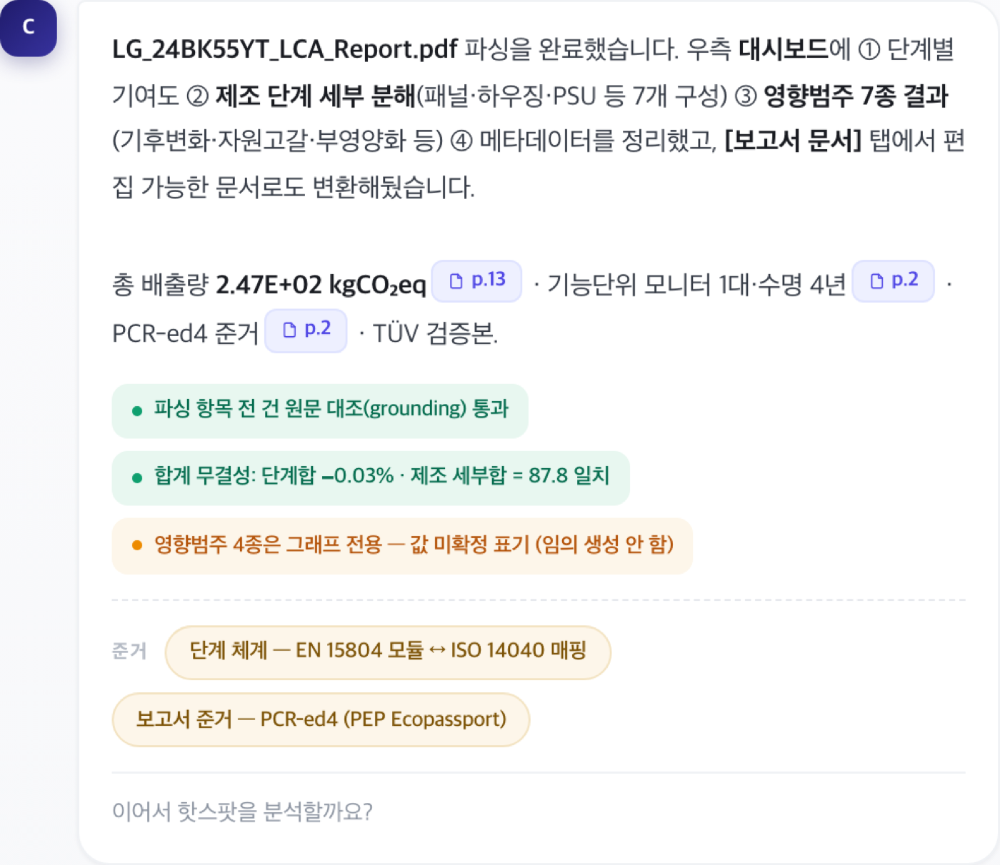
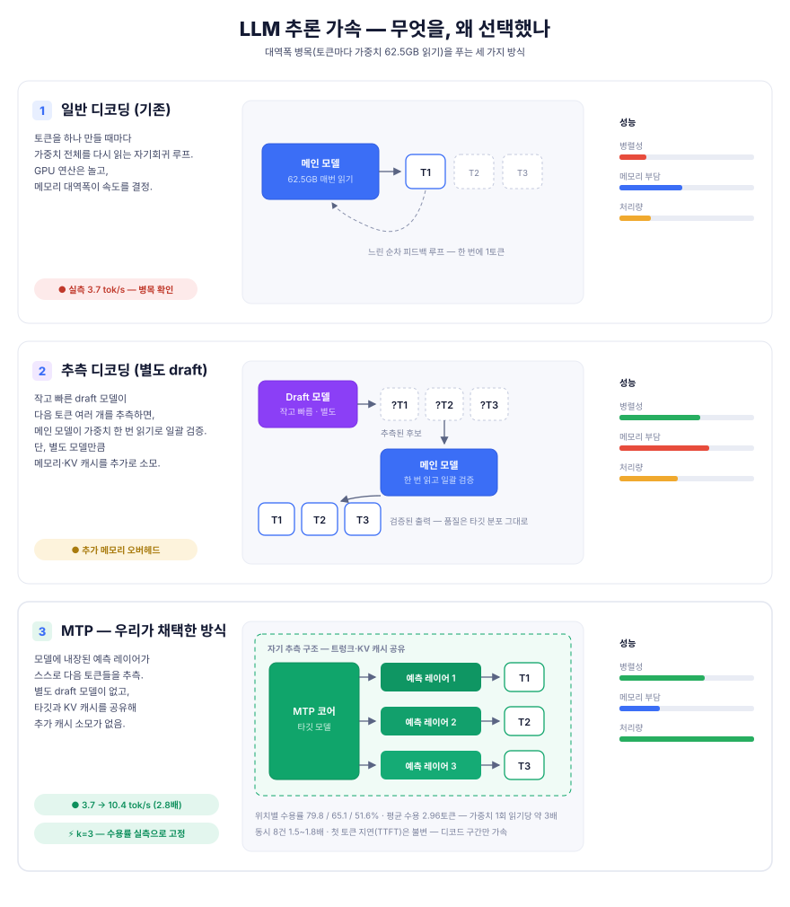

S배경 — 전문가의 수작업에 갇힌 LCA
EU CBAM(탄소국경조정제도) 등 글로벌 탄소규제가 본격화되면서, 제조기업은 제품 단위의 탄소발자국을 실측 데이터로 산정·보고·검증(MRV)해야 하는 상황이 됐습니다. 그런데 제품 하나의 탄소발자국을 산정하려면 수십~수백 페이지의 LCA 보고서를 읽고, 배출 기여가 큰 공정을 찾고, 감축 시나리오를 세우고, ISO 14040/14044/14067 요구사항에 맞는지 검토해야 합니다. 전 과정이 소수 전문가의 수작업이라 느리고, 비싸고, 사람마다 결과가 다릅니다. 이 전문가의 분석·검토 과정을 AI 에이전트로 자동화하는 것 — 보고서를 읽고, 핫스팟을 찾고, 시나리오를 검증하고, 표준 준수까지 검토하는 — 이 과제의 목표입니다.
T역할 — 백엔드와 AI 파이프라인 전담
- 플랫폼 백엔드를 분담한 공동 개발사와 모듈 경계·API 명세를 정기적으로 협의 — 서로의 시스템이 맞물리는 인터페이스를 문서로 계약하고 변경을 조율
- LCA 시뮬레이터를 개발하는 연구기관과 실연동 — 시나리오 검증에 필요한 계산 API의 입출력·평가법 기준을 함께 정의하고 E2E로 검증
- 실증을 주관하는 제조기업과 사용자 요구 협의 — 현장의 LCA 실무 니즈를 기능 요구사항으로 옮기는 논의에 지속 참여
A설계와 구현

01LCA 개선 시나리오 AI
- LCA 보고서 PDF를 업로드하면 탄소 배출 기여도가 큰 공정(핫스팟)을 자동 추출하는 파이프라인 구현
- 추출된 핫스팟을 근거로 LLM이 감축 개선 시나리오를 생성 — Structured Output으로 스키마를 강제해 후속 단계에서 바로 소비 가능한 형태로 반환
- 비정형 PDF의 표·수치 파싱 오류에 대비한 단계별 검증과 예외 처리로 파이프라인 신뢰성 확보
- 생성된 시나리오를 외부 LCA 시뮬레이터와 연동해 적용 전/후 배출량을 동일 평가법(GWP100)으로 정량 비교 — 시나리오가 "그럴듯한 제안"이 아니라 수치로 검증된 감축안이 되도록
- LLM의 수치는 코드가 검증 — 추출된 배출량 합계를 보고서 명시 총량과 자동 대조(실측 0.03% 오차 통과), 대응 불가 질의에는 수치 창작을 차단. 판정 주체가 코드라서 모델을 바꿔도 신뢰성 장치는 그대로 작동

산정 근거 있는 시나리오만 수치 제시02ISO 표준 준수 검토 에이전트
- 생성된 시나리오와 보고서를 ISO 14040 / 14044 / 14067 요구사항에 대조해 준수 여부를 검토하는 에이전트 설계·구현
- ISO 원문 3종을 판독해 검증 가능한 요구사항 트리(약 115개 노드, shall/should 층위·조건부 발동)를 컴파일 타임에 구축 — 표준 원문을 런타임 컨텍스트에 넣지 않음
- 트리 순회·적용성 게이트·판정 검증은 코드가 소유하고, LLM의 재량은 "보고서 어디에 근거가 있는가"의 탐색 하나로 좁힘 — 프롬프트로 부탁하는 규칙은 어겨지지만 기계 검증은 못 어기므로

ISO 14044 §4.5.2 준거03LCA 보고서 자동 저작
- 분석 결과와 원문을 고정 섹션 구조의 보고서로 자동 재구성하고, 빌드 후에도 섹션 단위 편집 API로 수정 가능한 문서 파이프라인 구현 — 최종 산출물은 PDF로 렌더링
- 특허 「탄소감축 시나리오 간 상호작용 자동 판정 및 표준 동등성 검증을 이용한 전과정평가 보고서 자동 저작」의 핵심 아이디어가 그대로 구현된 모듈

본문 직접 수정 (되돌리기 가능)04대화형 분석 에이전트
- PDF를 올리고 자연어로 대화하면 11개 도구(핫스팟 분석·시나리오 생성·준수 검토·LCA 시뮬레이션·대체 검증·공급망 그래프·데이터 조회(NL2SQL)·보고서 읽기/편집 등)를 LLM이 스스로 선택·호출하는 tool-use 에이전트 구현
- 한 질문에 여러 도구를 연쇄 호출하는 멀티라운드 루프(왕복 상한 제어)와 진행 상황 스트리밍으로 긴 분석도 대화 흐름 안에서 처리

모든 수치에 p.○ 원문 근거05LLM 서빙 인프라
- LiteLLM 프록시(OpenAI 호환)로 LLM 벤더를 추상화 — 클라우드 API와 온프레미스 모델을 코드 변경 없이 전환
- 보안 요건이 있는 고객 환경을 위해 온프레미스 GPU 서버에 vLLM으로 오픈소스 모델을 서빙하고, 전체 API를 실제 LCA 보고서로 회귀 검증
!트러블 슈팅
보고서 한 편 생성에 437초 — 에이전트 구조 재설계
성능 문제상황
보고서 저작이 문서 전체를 LLM 호출 한 번으로 생성하는 구조라 437초가 걸렸고, 시나리오를 반영한 수정은 문서 전체를 재생성해야 해서 요청당 입력이 21,300토큰에 달했습니다. 생성 속도가 느린 온프레미스 환경에서는 체감 불가능한 수준이었습니다.
해결
먼저 동일 실보고서·동일 질문 기준의 전/후 실측 하네스를 만들어 측정 기준을 고정한 뒤 구조를 바꿨습니다. ① 보고서 생성을 목차 분할 병렬 sub-agent로 재설계, ② 시나리오 반영 수정은 전체 재생성 대신 영향받는 섹션만 갱신하는 전파 구조로 전환, ③ 멀티턴 루프는 지난 턴 도구 결과를 상한 압축하고 보고서 원문을 키워드 매칭 부분 조회로 바꿨습니다.
반면 대화형 QA에서는 병렬화 이득이 나오지 않았는데 — 라운드마다 시스템 프롬프트와 도구 스키마를 재전송하는 고정비가 절감분을 상쇄하는 것을 측정으로 확인하고, 그 라우터에는 적용하지 않았습니다.
알게 된 점
LLM 최적화도 일반 성능 작업과 다르지 않습니다 — 측정 기준부터 고정하고, 개선마다 전/후 수치로 판정해야 합니다. 그리고 병렬화가 항상 이기는 게 아니라, 호출당 고정비 구조에 따라 라우터별로 득실이 갈린다는 것을 배웠습니다.
437초 → 134초 (목차 분할 병렬 sub-agent)
21,300 → 952 (영향 섹션만 갱신하는 전파 구조)
전체 재생성 대비
해당 라우터엔 미적용 (측정이 결정)
코드로는 못 넘는 3.8 tok/s — 추론 가속으로 2.8배
인프라 한계상황
구조 최적화(01) 후에도 온프레미스의 체감 속도는 생성 속도 3.8 tok/s가 지배했습니다. 자원 관측으로 확인한 원인은 연산이 아니라 메모리 대역폭 병목(토큰마다 62.5GB 가중치를 읽는 구조) — 애플리케이션 코드로는 더 줄일 수 없는 구간이었습니다.
해결
모델에 내장된 예측 레이어가 다음 토큰들을 미리 추측하고 타깃이 한 번에 검증하는 MTP(추측 디코딩)를 적용했습니다. 대역폭 병목에는 "한 번 읽고 여러 토큰"이 정확히 유효한 처방이라서요. 적용 과정에서 서빙 이미지 버전 상향이 필요했고(구버전이 draft 아키텍처를 인식 못 함), 상향 후에는 서비스가 의존하는 tool call 동작을 회귀 확인했습니다.
추측 토큰 수 k는 위치별 수용률 실측(79.8 / 65.1 / 51.6%)을 근거로 k=3에서 고정 — 더 올릴 실익이 없음을 수치로 판단했습니다. 결과는 단일 스트림 생성 속도 2.8배 (3.7 → 10.4 tok/s), 동시 8건에서 1.5~1.8배, 검증 단계가 타깃 분포를 따르므로 품질 손실 없음.
알게 된 점
추측 디코딩은 디코드 구간만 가속합니다(첫 토큰 지연은 불변, 동시성이 높아지면 이득 감소). "가속 기법이 어느 구간을 돕는가"를 구분해야 벤치 수치를 서비스 체감으로 옮길 때 과장 없이 말할 수 있다는 것을 배웠습니다.

R결과
- 특허 출원 — 「탄소감축 시나리오 간 상호작용 자동 판정 및 표준 동등성 검증을 이용한 전과정평가 보고서 자동 저작을 위한 장치」 (10-2026-0139153, 제1발명자)
- 핫스팟 추출 결과가 실제 제품 보고서의 명시 총량과 0.03% 오차로 일치 — 검증 게이트를 실보고서로 통과
- 생성된 감축 시나리오 전 건을 외부 시뮬레이터 실계산으로 검증 — 감축량이 산술적으로 일치, 창작 수치 0건
- 에이전트 효율을 동일 실보고서·동일 질문 기준 전/후 실측으로 개선: 보고서 문서 생성을 목차 분할 병렬 sub-agent로 재설계해 응답 시간 69% 단축(437초→134초), 시나리오 반영 시 영향받는 섹션만 갱신하는 전파 구조로 전체 재생성 대비 입력 토큰 96% 절감(21,300→952)·응답 74% 단축
- 멀티턴 대화의 지난 턴 도구 결과를 상한 압축하고 보고서를 키워드 매칭 부분 조회로 바꿔 에이전트 루프 입력 토큰 48% 절감. 라운드당 고정비를 프로브로 분해해 "목차 왕복 추가"안이 오히려 토큰을 12% 늘리는 것을 실측으로 기각하고 재설계한 결과
W기술 선정 이유
+회고 — 다시 한다면
- PDF 파싱 실패 케이스를 그때그때 고치는 대신, 실패 사례를 평가셋으로 축적해 파서 개선을 정량화했을 것
- ISO 요구사항 트리의 커버리지(전체 요구사항 대비 검증 가능 항목 비율)를 지표로 관리해 검토 신뢰도를 수치로 말할 수 있게 했을 것
* 실제 서비스 코드는 국가 R&D 과제 특성상 비공개입니다. 데모는 UI/기능 재현입니다.